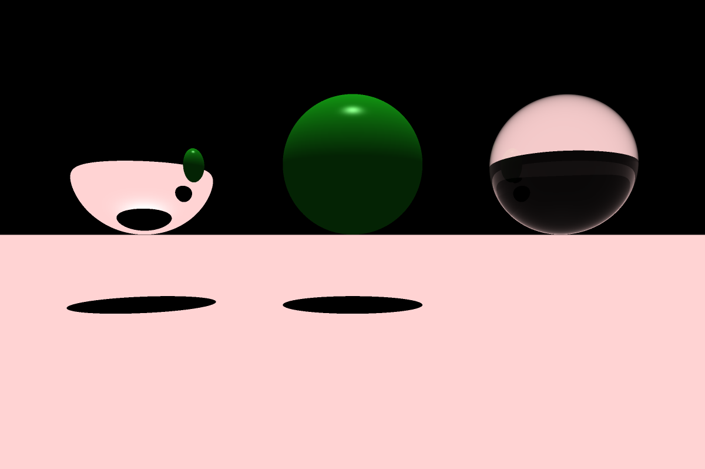

<div class="container">
  <div class="row">
    <main>
    <article>
      <section class="col-md-12">
        <header>
          <h1 id="projects-sphliquid">Liquid simulation using IISPH</h1>
          <hr>
        </header>
        
        <h2>Summary</h2>
        <p>
        A simple C++ implementation of the implicit incompressible sph model (IISPH) proposed by <a href="#ihmsen2014">Ihmsen et al.</a>
        </p>
        <ul>
          <li><strong>Boundaries</strong> are handled using the method of <a href="Akinci2012">Akinci et al.</a></li>
          <li><strong>Surface tension</strong> has been implemented using the model proposed by <a href="Akinci2013">Akinci et al.</a></li>
          <li>Neighbor search uses Z-sorting to improve cache efficiency.</li>
          <li>Blender was used for offline rendering.</li>
        </ul>
        <h2>Downloads</h2>
        [<a href= "https://github.com/manteapi/hokusai">Github</a>]
        <h2>Results</h2>
        <video width="426" height="240" controls>
          <source src="videos/hokusai/simpleBreakingDam_Ferstl2016.mp4" type="video/mp4">
        </video>
        <h2>References</h2>
        <ul>
          <li id="ihmsen2014">
            Markus Ihmsen, Jens Cornelis, Barbara Solenthaler, Christopher Horvath, and Matthias Teschner. <cite>Implicit Incompressible SPH</cite>. In: IEEE Transactions on Visualization and Computer Graphics 20.3 (<time datetime="2014">2014</time>), pp. 426–435.
          </li>
          <li id="Akinci2012">
            Nadir Akinci, Markus Ihmsen, Gizem Akinci, Barbara Solenthaler, Matthias Teschner. <cite>Versatile Rigid-Fluid Coupling for Incompressible SPH</cite>. ACM Transactions on Graphics (Proc. SIGGRAPH 2012), vol. 31, no. 4, pp. 62:1-62:8, July 2012.
          </li>

          <li id="Akinci2013">
            Nadir Akinci, Gizem Akinci, and Matthias Teschner. <cite>Versatile surface tension and adhesion for SPH fluids</cite>. ACM Trans. Graph., 32(6):182:1–182:8, 2013.
          </li>
        </ul>
      </section>
    </article>
    <article>
      <section class="col-md-12">
        <header>
          <h1 id="projects-raytracerSandbox">Raytracer sandbox</h1>
          <hr>
        </header>
        <h2>Summary</h2>
        <p>
        A c++ raytracer based on the work of <a href="#Whitted">Turner Whitted</a> and <a href="https://www.scratchapixel.com/">ScratchAPixel</a> tutorials.
        This work is a sandbox for learning and exploring new techniques related to raytracing used for rendering images.
        The current implementation is extremely slow as it does leverage any acceleration structure.
        This project features :
        </p>
        <ul>
          <li>Rendering of spheres, plane and triangle meshes.</li>
          <li>Reflection, refraction and diffusive illumination models.</li>
          <li>Hard shadows</li>
        </ul>
        <h2>Downloads</h2>
        [<a href= "https://github.com/manteapi/raytracer-sandbox">Github</a>]
        <h2>Results</h2>
        
        <h2>References</h2>
        <ul>
          <li id="#Whitted">Turner Whitted. 1980. An improved illumination model for shaded display. Commun. ACM 23, 6 (June 1980), 343-349.</li>
        </ul>
      </section>
    </article>
    </main>
  </div>
</div>
